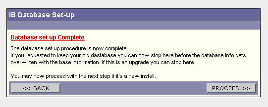

***WARNING - BACKUP YOUR BOARD DATABASE BEFORE YOU BEGIN! ***
(AdminCP>Database>Export Database)
Step 1. Uploading Files.
From the 3.1.3 dowload upload the following files....
- installer.cgi (upload in ASCII- chmod to 755)
- ikonboard.cgi (upload in ASCII- chmod to 755)
- ikonboard.conf (upload in ASCII- chmod to 755)
- index.html (upload in ASCII- chmod to 755)
- INSTALL_DATA folder and all its contents. (upload in ASCII- all the files chmod to 755 )
- install_modules folder and all it's contents. (upload in ASCII- all the files chmod to 755 )
- Data.tar (upload in BINARY- chmod to 755)
- Database.tar (upload in BINARY- chmod to 755)
- Languages.tar (upload in BINARY- chmod to 755)
- non-cgi.tar (upload in BINARY- chmod to 755)
- Skin.tar (upload in BINARY- chmod to 755)
- Sources.tar (upload in BINARY- chmod to 755)
Step 2. Run the Installer.
Example: http://www.mysite.com/cgi-bin/ikonboard/installer.cgi
Follow the on screen instructions of the installer entering the correct information as you proceed.
- iB System Profiler - If all read "yes" click 'Proceed with the installation' ( HRI registration key is optional it is ok if it reads no.)
- Board paths and other set-up information - The board paths should match what is set in your AdminCP>Options/Settings>Board Paths. - Click Proceed.
- Checking entered information - all should read Yes, if no go back and check the path information entered. - Click Proceed.
- Installing the Ikonboard files - select Extract the tar files for me. -Click Proceed
- Tar archive set up
a. Remove old ikonboard files before installing new? select Yes
b. Remove any old databases (members and posts)? This is for DBM users only. If your using SQL select yes. If you select no, you will need to replace manually all the files contained in the /Database/config/ directory. select NO
c. Click Proceed. - Tar archives extracted succesfully - click Proceed.
- Checking Ikonboard file structures - if all read Yes - Click Proceed.
- Database set up
If you select....
a. DBM Database - Click proceed, then STOP! Do not go any further, you have completed the upgrade!.
b. MySQL (PostgreSQL or Oracle) Database - Click Proceed,
1. Fill Out the Set Up Information (The Information must match the settings when you originally set up the database.)
Your Username: Enter the database username
Your Password: Enter the database password.
Your Database Name: Enter database name.
Your Database Server: If other than 'localhost'
Port Number for DB Server: this is optional
Table Prefix: Default is set to ib_ (this must match what your current database uses)
Allow Ikonboard to create the needed tables? ***This MUST be set to no*** If you do not set this to no you will overwrite your current database and lose all your member's and posts.
2. Click Proceed and STOP! Do not go any further, you now must run the 313_atlertable.cgi script.

Step 3 Finishing Up
You must now delete the installer.cgi from your server. Now before viewing your upgraded board, clear your browser's cache. Some of the new images may not load unless you so. Or you may have to reload your browser a few times to get all the images to load properly.
Now access your board,( ex. http://www.mysite.com/cgi-bin/ikonboard/ikonboard.cgi)
DBM users only: You may notice that your board does not look as it should. You need to update your board template.
In the Upgrade folder of the download zip you will find a board_template.txt file, copy the contents of that file.
Now Go to your AdminCP>Skin/Templates>Edit Board Template and select "Original Board Template". Paste the contents of the board_template.txt and click "Edit This Template"
Now your board should look correct.
MySQL users: You must run the 313_atlertable.cgi script. This will update your tables to be compatible with version 3.1.3 and function correctly.
Once this script has run successfully you will have completed the upgrade!